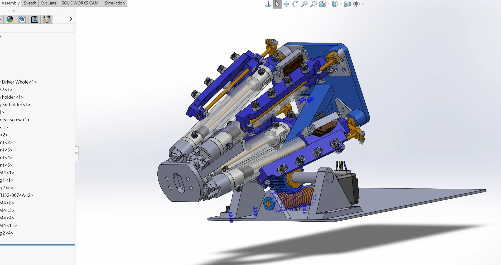
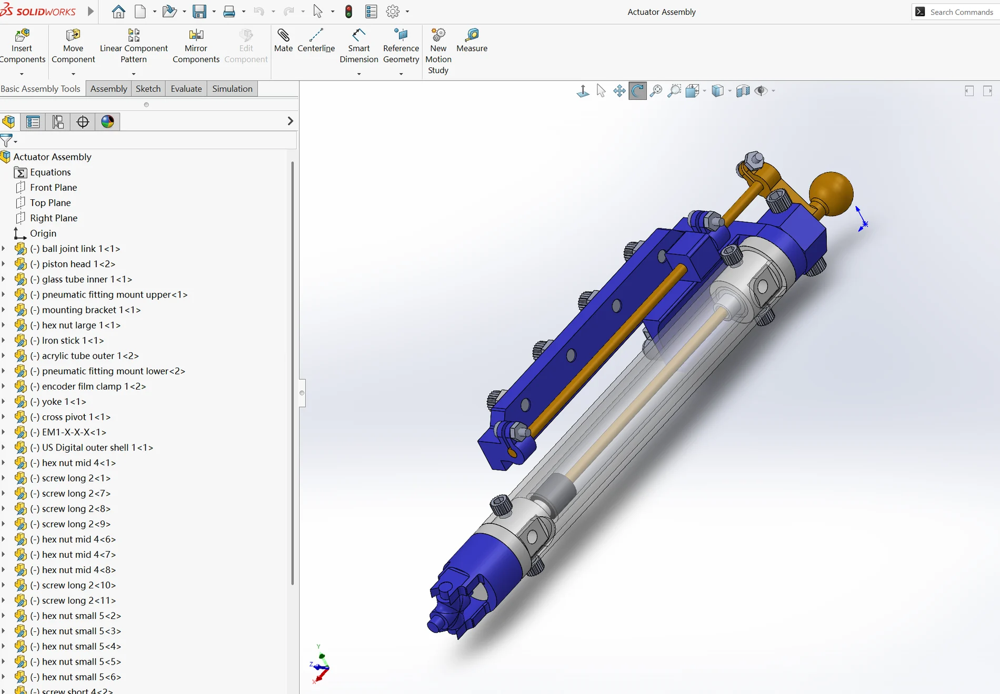

MRI-Compatible Robotic Needle Intervention
A modular robotic platform for precise image-guided needle positioning, with mechanical architecture designed around MRI compatibility, compact geometry, and interchangeable subsystems.

I designed and prototyped a modular MRI-compatible needle intervention platform for precision image-guided minimally invasive procedures. The development included reverse-engineering legacy pneumatic actuator concepts and redesigning subsystems for manufacturability, modularity, and integration with MR-safe robotic hardware.
The mechanical architecture includes multi-DOF needle positioning, actuator linkages, ball-joint interfaces, pivot constraints, transmission concepts, and modular needle-insertion assemblies.
Interactive CAD
Rotate, pan, and zoom the full assembly or isolate the actuator model directly in the browser. The geometry is pre-tessellated from the exported STEP files so the viewer opens without SolidWorks or a browser CAD kernel.
Open 3D CAD viewer ↗